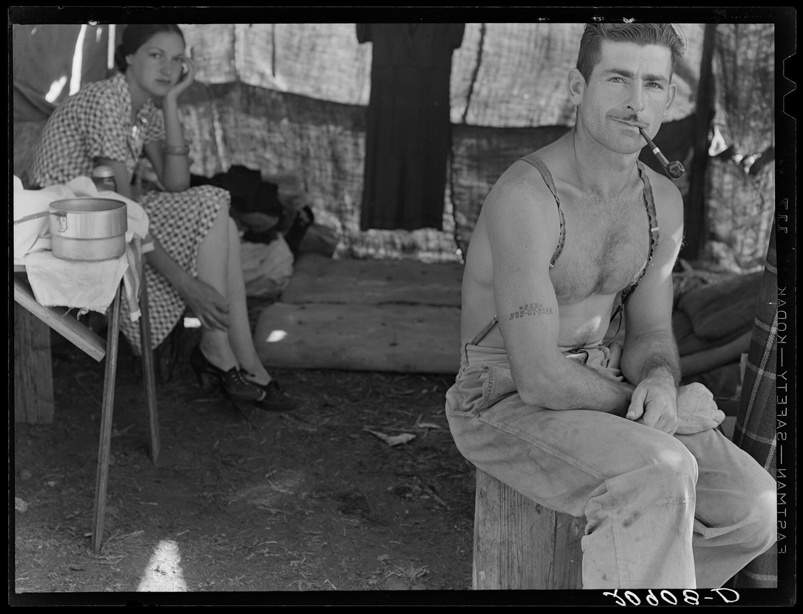

Directions: Study the photograph and the background note, then answer the questions.

Background. Dorothea Lange made this photograph in August 1939, ten years after the crash and four years after the Social Security Act. The man had worked in the lumber woods; when the work gave out, he and his wife followed the harvests. He had his Social Security number tattooed on his arm so that the number, and the account it named, could never be lost. The photograph holds the whole lesson in one frame: a federal program permanent enough to be written on a man's skin, and a worker still migrant and unemployed at the decade's end.
1. What does the tattoo itself prove about Social Security by 1939? Answer from what a tattoo is: what kind of fact about the program would make a man carry its number permanently?
2. The same frame shows the program's limit. State the limit from the photograph's own facts: who this man is, what he is doing in Oregon, and the year on the caption.
3. A bank fails in Ohio in 1938 and its depositors are repaid. Name the agency that repays them, the year it was created, and the change in the federal role its existence shows.
4. A farm worker in Georgia and a domestic worker in Chicago both reach old age in 1939 without Social Security coverage. Explain why, and name one other group or practice from this lesson that shows the settlement's exclusions were built in rather than accidental.
1. What does the tattoo prove about Social Security by 1939? A tattoo is permanent and cannot be lost, stolen, or left behind. A man tattoos a number on his arm only if the number is permanent too, and valuable for life: by 1939 Social Security was not an emergency program a worker expected to expire, but a standing account in his own name, which his working life and his old age would both run through. The number mattered enough to carry on skin because the program was understood to be staying. (Blueprint 15)
2. State the program's limit from the photograph's own facts. The man is an unemployed lumber worker in 1939, ten years into the Depression, working the bean harvest with his wife out of a migrant camp. Social Security's old-age insurance would pay him at retirement, and the safety net existed, but in August 1939 he was still without regular work, because the New Deal never brought unemployment below fourteen percent in any year of the decade and full employment waited for war spending. The frame holds both the permanence and the limit at once. (Blueprint 15)
3. Name the agency, its year, and the change in the federal role. The Federal Deposit Insurance Corporation, created in 1933. Its existence shows the federal government taking a permanent, standing responsibility inside private economic life: depositors are repaid by the government if their bank fails, so the safety of a family's savings rests on a federal guarantee rather than on the fortunes of one local bank. The Securities and Exchange Commission answer is wrong here; the SEC regulates stock markets and does not repay depositors. (Blueprint 15)
4. Explain the two workers' lack of coverage, and name one other built-in exclusion. The Social Security Act of 1935 excluded agricultural and domestic workers from old-age insurance at the start, categories that covered a large share of Black workers and of women. Any one other built-in exclusion: segregated CCC camps; uneven relief under local administration; redlining, in which federal housing officials marked minority neighborhoods as risky on security maps and denied loans there; or repatriation, the removal of people of Mexican descent, including United States citizens, to Mexico. Students should connect the example to design: the exclusions were written into statutes, camp structures, and maps. (Blueprint 15)
Teacher note. This check is formative. Questions 1 and 2 are a pair: a student who can read the tattoo only as a curiosity has not yet joined permanence to limit, which is the judgment the writing task requires. Question 3 separates the two financial agencies students most often merge; watch for SEC answers and correct them on the spot.